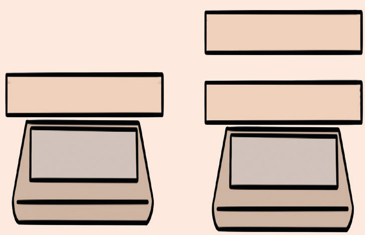

(iv) The charge will remain constant, but the voltage will decrease.
(c) Object 1 is given a negative charge and placed on a beam balance. Object 2, which is also charged, is brought close to body 1, and the balance reading changes, as shown in Figure 1.47.

Object 193.5g
Object 292.9g
Which action would decrease the reading on the balance furthest?
(d) What should you do if you find yourself outdoors during a severe thunderstorm?
(e) A negatively charged metal rod is brought near side P of a neutral metal sphere PS. Which diagram in Figure 1.48 correctly shows the resulting charge distribution on the metal sphere?
(i)PS
(ii)PS
(iii)PS
(iv)PS
Figure 1.49
2. Match each item in column A against its corresponding item in column B by writing the correct response in the space provided.
| Column A | Answer | Column B |
|---|---|---|
| (a) Stores charge | (i) Repel | |
| (ii) Capacitor | ||
| (c) Glass | (iii) Metal cap | |
| (d) Similar charges | (iv) Positive charge | |
| (e) Detect charges | (v) Leaf electroscope | |
| (vi) Insulator | ||
| (vii) Attract | ||
| (viii) Capacitor in parallel | ||
| (ix) Capacitor in series | ||
| (x) Negative charges |